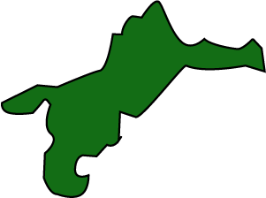
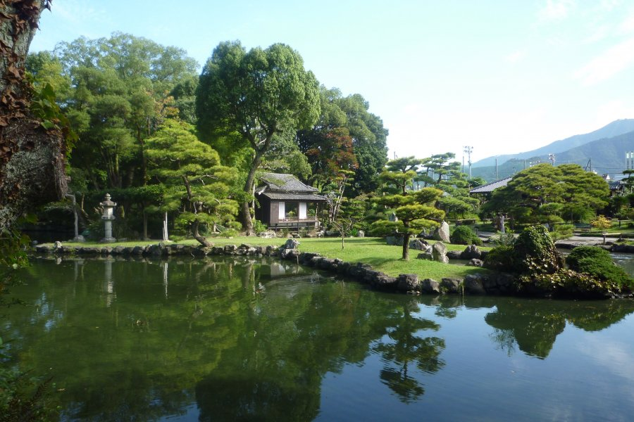
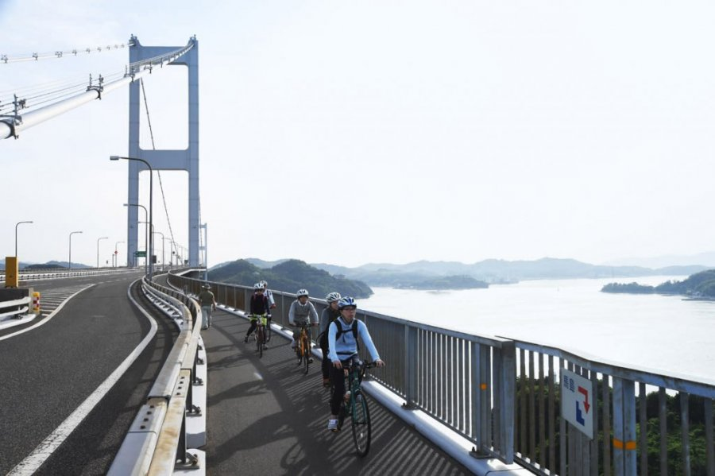

Though there are various explanations concerning its origin, the name Ehime is very old, dating back to ancient myths and legends. Iyo, the old name for Ehime, is said to have first appeared as the name for the island of Shikoku in the "Kojiki" (Record of Ancient Matters) and the "Nihon Shoki" (Chronicles of Japan), both written in the early eighth century. It is also said that the name lyo is derived from lyu, which means hot water, since this area was famous for Dogo onsen (hot spring spa) as far back as the 6th and 7th centuries. (Source: Ehime Site).
Prefecture Image
Tenshaen Garden
Bullfighting Festival
Shimanami Kaido Cycling
